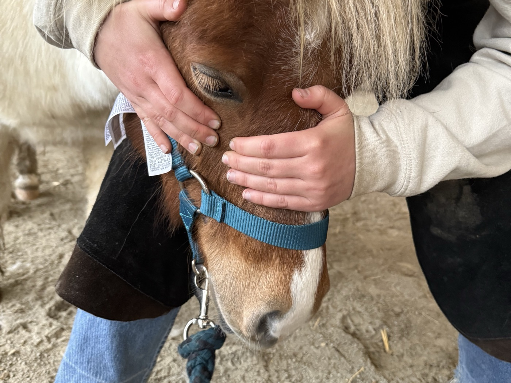
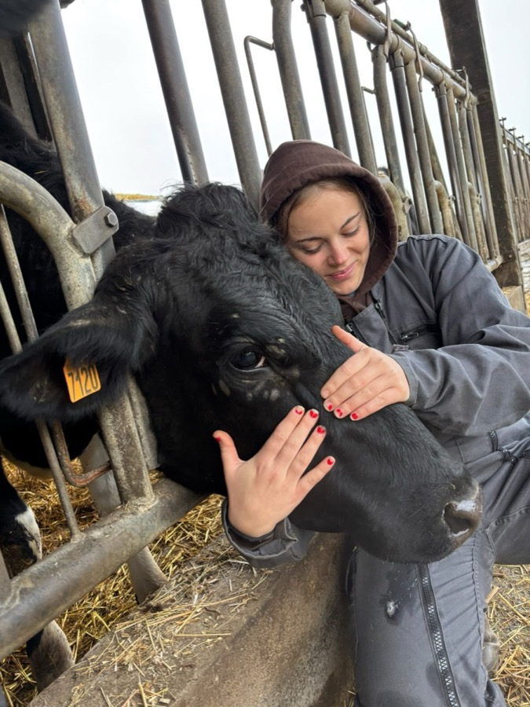

Une vision globale
Le corps forme un tout : une tension à un endroit peut se traduire par une gêne ailleurs. L'ostéopathe raisonne sur l'animal dans son ensemble, pas sur une zone isolée.
Une médecine manuelle, douce et globale, qui cherche à rendre à l'animal sa mobilité et son équilibre. Sans médicament, elle libère les tensions du corps et accompagne le bien-être de votre compagnon, en complément du suivi vétérinaire.


Définition
L'ostéopathie animale est une thérapie manuelle qui vise à identifier et à traiter les pertes de mobilité des différentes structures du corps : articulations, muscles, tissus. Ces restrictions, souvent invisibles à l'œil, peuvent gêner l'animal, modifier sa posture ou son comportement, et retentir sur son confort au quotidien.
Par des techniques douces et précises, l'ostéopathe cherche à relancer cette mobilité pour que le corps retrouve son équilibre et sa capacité naturelle à s'auto-réguler. L'objectif n'est pas de masquer un symptôme, mais d'accompagner l'animal vers un mieux-être durable.
Les grands principes
Le corps forme un tout : une tension à un endroit peut se traduire par une gêne ailleurs. L'ostéopathe raisonne sur l'animal dans son ensemble, pas sur une zone isolée.
Palpation, mobilisations et manipulations douces sont réalisées uniquement à la main, sans médicament, et toujours ajustées à l'espèce, à l'âge et au ressenti de l'animal.
En levant les blocages, on soutient les mécanismes naturels de récupération du corps. L'ostéopathie aide l'organisme à retrouver son propre équilibre.
Dans quels cas
Un cadre clair
La réglementation impose qu'un vétérinaire ait examiné l'animal au préalable, notamment en cas de suspicion de pathologie. L'ostéopathie intervient en complément, jamais à la place d'un diagnostic médical.
Chaque séance commence par un échange avec vous sur l'historique et le mode de vie de l'animal, pour adapter l'approche et travailler en lien avec les autres professionnels de sa santé.
Selon l'âge, l'activité et l'état de l'animal, un suivi régulier peut être conseillé pour entretenir sa mobilité et prévenir les compensations.
Équidés, bovins, chiens, chats ou NAC : chaque espèce a sa propre approche. Explorez les prestations ou prenez rendez-vous dès maintenant.
Consultation soumise à examen vétérinaire préalable, conformément à la réglementation.
Questions fréquentes
Non. L'ostéopathie est complémentaire de la médecine vétérinaire. Elle n'établit pas de diagnostic médical et ne se substitue jamais à un traitement : un vétérinaire doit avoir examiné l'animal au préalable.
Les techniques sont manuelles et douces, toujours adaptées à la tolérance et au comportement de l'animal. La séance se réajuste ou s'arrête si l'animal manifeste un inconfort.
Dès qu'un changement apparaît (raideur, boiterie, comportement), après un événement marquant (chute, transport, intervention), ou simplement en prévention pour entretenir la mobilité. En cas de doute, contactez-moi.